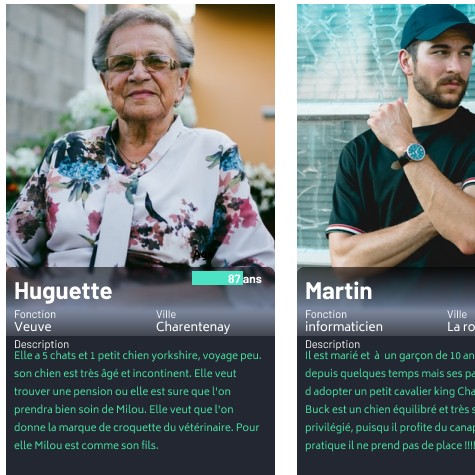
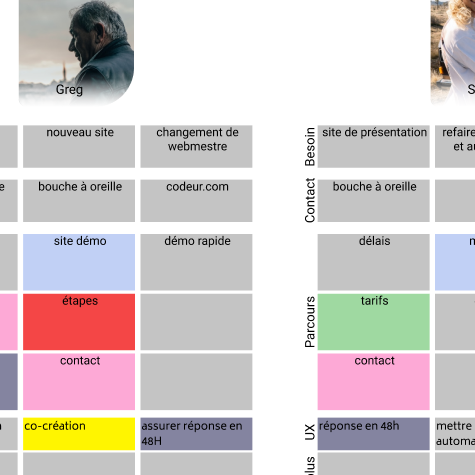
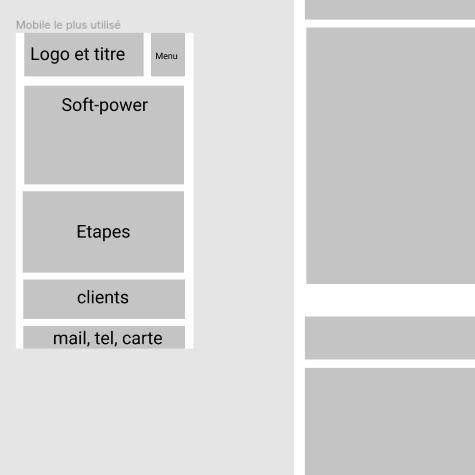
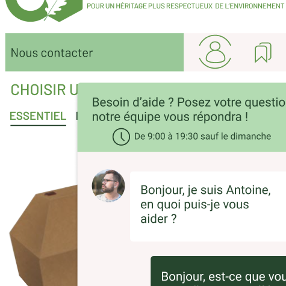
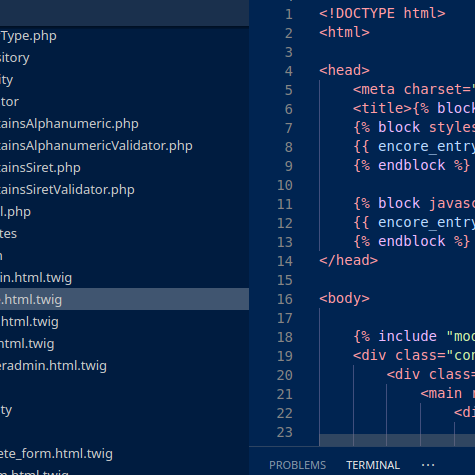

Les étapes de conception permettent de définir le
besoin,
les points d'attention, trouver des solutions UX et préparer le travail pour la réalisation ou choix
du
template.
Nos clients peuvent suivre en temps réel les avancées sur chaque tâche, intervenir et
particper à la conception.

Les personas nous renseignent sur leurs envies, leurs besoins, leurs peurs, ce qu'ils attendent,
leurs compétences à l'utilisation de l'outil. Les définir permet de mieux les connaitres et être
plus près de leurs attentes en utilisant l'outil.

Le parcours utilisateurs va nous permettre de réfléchir à comment les utilisateurs viennent chercher
l'information. C'est une méthode qui nous aide également à réfléchir sur les possibilités pour leurs
proposer des expériences utilisateurs qui les fidéliseront en prenant soin d'eux.

Suite aux parcours, nous avons les parties du site à mettre en place afin de permetre un accès
rapide en 3 cliques maximums. On met également dans ces zones, les éléménts indispensable à la
communication et l'image de l'entreprise. On cré pour cela des zonings, wireframes et maquettes hd.

Par les test utilisateurs, il est possible de savoir si les étapes précédentes permettent rapidement
et simplement de trouver les élements et voir les informations. C'est une étape importante, qui va
permettre d'ajuster, modifier certaines zones en fonction de tests réels avec les utilisateurs.

L'intégration est le moment idéal pour s'interroger sur les animations pour mettre en valeurs
certains éléments, pour guider l'utilisateur et pour l'informer de validations ou de problèmes qui
peuvent avoir lieu sur le back-end. Les animmations permettent également dans un espace restreint
d'afficher plus d'informations, ajouter des annotations ou informer sur les étapes suivantes.